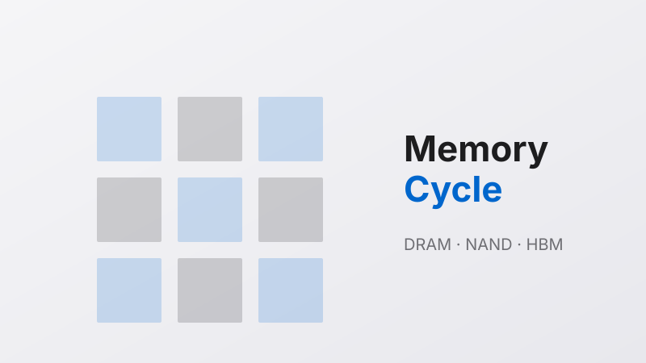

Back to essays
Loading...
Loading...
2026-07-24 · 5 min read

Audio version · MiniMax TTS · male-qn-jingying
Back to essays
Storage · Cycle
Is the memory cycle peaking? Six core signals
2026-07-24 · 5 min read · audio 1:54

Audio version · MiniMax TTS · male-qn-jingying
一、价格涨幅本身，已经说明了问题
先看几个数字（数据来自 TrendForce，2026 Q2 合约价）：
- DRAM 合约价：环比上涨 58-63%
- NAND Flash 合约价：环比上涨 70-75%
- HBM 供需缺口：约 5.1%（2011 年以来最高）
- DRAM 供需缺口：约 4.9%（2011 年以来最高）
注意一个细节：HBM 涨得比 DRAM 快，DRAM 涨得比 NAND 快。
这不是平均涨幅，这是一个从产业链最上游往下游传导的涨价序列。
HBM 是给 AI 算力卡用的，需求最刚性；DRAM 是给服务器用的，需求次刚性；NAND 是给 SSD 用的，需求弹性最大。越是上游越是紧缺，越是下游越是先涨。
结论：这一轮是结构性紧缺，不是普遍性紧缺。
二、为什么是"超级周期"而不是普通周期？
传统存储周期是 3-4 年一轮，价格大涨大跌。这一轮不一样：
| 特征 | 传统周期 | 这一轮 |
|---|
| 核心驱动 | PC / 手机 / 服务器 | AI 算力 |
| 需求弹性 | 高（涨价抑制需求） | 低（AI 必须买） |
| 供给响应 | 12-18 个月扩产 | 24-36 个月（技术瓶颈） |
| 持续时间 | 3-4 年 | 5+ 年（业内判断） |
业内共识：本轮周期至少持续到 2026 年底——不是"涨完了就跌"
消费端涨价会自然调节市场——不是崩盘——是温和回落。
三、6 个核心判断信号
信号 1：价格上涨幅度 ✅ 还在涨
- DRAM：环比 58-63% 上涨
- NAND：环比 70-75% 上涨
- 趋势：还未见顶
信号 2：供给缺口 ✅ 还在扩大
- DRAM 缺口 4.9%
- NAND 缺口 4.2%
- HBM 缺口 5.1%
信号 3：三巨头扩产意愿 ✅ 故意不扩产
- 三星 / 海力士 / 美光扩产态度暧昧
- HBM 产能已被 AI 客户提前锁定
- 美光 2025 年 12 月退出消费级市场
信号 4：国内厂商业绩 ✅ 全面爆发
- 兆易创新：2026 Q1 归母净利润同比 +522.79% 到 14.61 亿
- 德明利：Q1 营收同比 +502%，归母净利润同比 +4943%
- 江波龙：存货同比 +130%（在囤货）
- 佰维存储：存货同比 +217%（在囤货）
信号 5：国产替代 ✅ 加速
- 长鑫科技：2026 年 1 月申报科创板 IPO，估值 1500 亿
- 长江存储：Q1 营收超 200 亿，NAND 全球份额超 10%
- 兆易创新：持有长鑫 1.80% 股权
信号 6：股价位置 ⚠️ 部分透支
- 美光 2026 至今 +249%
- SK 海力士 +218%
- 三星 +175%
6 个信号中：5 个绿灯，1 个黄灯
四、那到底现在该不该买？
类别 1：已持有美股存储股（美光 / 海力士 / 三星）
- 业绩兑现期——继续持有至少 6 个月——等 Q3 兑现
- 2026 年底前——开始逐步减仓
- 黄灯信号：美光 +249% 已部分透支
类别 2：想配置 A 股存储链
| 公司 | 主营 | 业绩弹性 | 估值风险 |
|---|
| 兆易创新 | NOR Flash + 长鑫股东 | +522% | 部分透支 |
| 江波龙 | 存储模组 | +130% 存货 | 中等 |
| 德明利 | 存储模组 | +4943% | 高（基数低） |
| 佰维存储 | 嵌入式存储 | +217% 存货 | 高 |
类别 3：想提前布局下一代存储（HBM / 长江存储 IPO）
- HBM：海力士占 58%，三星 / 美光各 21%
- 长江存储：估值可达 1 万亿
- 长鑫科技：估值 1500 亿
- 风险：IPO 估值已部分反映
五、三个不能忽视的风险
| 风险 | 详情 |
|---|
| 消费端涨价抑制 | 联想 / 戴尔已开始提价，需求会自然回落 |
| 国产替代进度 | 长鑫 / 长江产能良率爬坡有不确定性 |
| AI 需求节奏 | 如果 GPU 出货放缓，HBM 需求也会放缓 |
六、最终判断：在周期的什么阶段？
| 维度 | 状态 |
|---|
| 价格涨幅 | 高位（但还在涨） |
| 供给缺口 | 2011 年以来最高 |
| 三巨头扩产 | 故意不扩产 |
| 业绩兑现 | 全面爆发 |
| 国产替代 | 加速 |
| 股价位置 | 部分透支 |
结论：这一轮超级周期，我们仍在中后段——不是顶部，但已不是底部
七、给"还想上车"的朋友一句话
存储这一轮不是"涨完了就崩"，是"涨完了会稳"，最后"温和回落"。投资者不需要猜顶——跟着业绩走，跟着扩产走，跟着 AI 算力走。2026 年下半年，会是这一轮周期最明确的阶段。
数据来源
TrendForce / Counterpoint Research / IDC / 公司公告 / 21世纪经济报道 / 上海证券报 / 澎湃新闻